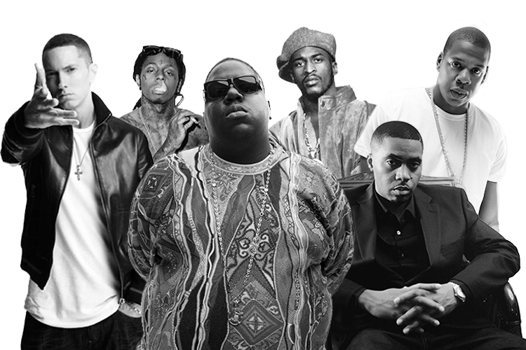
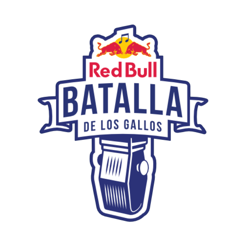

Freestyle
El freestyle se caracteriza por ser rap creado en el momento, improvisando a la vez que se rapea, expresando lo que se ve o lo que se siente sin dejar de clavar las palabras sobre un ritmo y manteniendo un flow constante. Aunque literalmente el término "free-style" es traducido directamente como "estilo libre" en el castellano, se usa la palabra "improvisación" como traducción ordinaria.
Freestyle como Rap
Cuando la música rap se hizo popular en 1979 muchos Breakers, Poppers y Lookers (así como los escritores de Graffiti) se convirtieron en Emcees y Deejays, llevando sus terminologías b-boy/b-girl con ellos. Cuando estos ex Breakers y Escritores de Graffiti realizaron sus letras, rimas improvisadas, rimas que salían de la cabeza, llamaron a esto freestyling, porque las mismas reglas que se aplicaron a los b-boys y b-girls en el pasado, ahora se aplican a los Emcees y Deejays del presente. En este sentido el freestyle rap es similar a la música improvisada como se hace en el Jazz, o improvisar actuaciones como en el teatro, o formas como se hace en la pintura. Nadie sabe verdaderamente quien fue la primera persona que empezó a improvisar el Rap, cuando comenzó, o donde tomo lugar verdaderamente, pero generalmente se cree que tuvo origen en la escena Hip Hop de la Costa Este de Estados Unidos (East Coast) a mediados de los 80. Los primeros MCs estaban con sus compañeros (homeboys o homies) y “escupían” acerca de lo que sentían o la necesidad que tuviesen. Si el freestyle rap no hubiese sido reconocido como una parte esencial del Hip Hop, muchos artistas que hoy son famosos no hubieran sido descubiertos. En ese tiempo se pensaba que "Estaba bien tener letras escritas, pero si no podías improvisar y hacer que el lugar reviente en el momento, perdías respeto". Y por esta razón, entre otras, empezaron a surgir las Batallas de Gallos, también conocidas como Freestyle Battles. Quizá la batalla mas temprana y famosa de freestyle rap haya sido en 1981 cuando Kool Moe Dee retó a Busy Bee Starsky.
Batalla de Gallos
Desde la primera Final Internacional en Puerto Rico en 2005 hasta la que se disputará el próximo 30 de noviembre en el Wizink Center de Madrid, la Red Bull Batalla de los Gallos no ha parado de crecer en todo el mundo de habla hispana. La Red Bull Batalla de los Gallos nació oficialmente en 2005. Fue la primera vez que se convocaron finales nacionales y una final internacional que se celebró en Puerto Rico, país que muchos consideran el germen de las batallas de MC's. Antes de 2005 existían los eventos de freestyle pero Batalla fue el primer certamen organizado en el que un puñado de jueces especializados en la escena puntuaban a unos raperos que improvisaban sobre bases rítmicas, con dificultades añadidas como las temáticas sorpresas o los objetos. ¡El primer ganador internacional fue el argentino Frescolate! Ese año la final española se celebró el 10 de septiembre en la Sala Caracol, un evento que desbordó todas las previsiones de afluencia de público (la entrada era libre). La segunda semifinal de aquel evento, que enfrentó a Zatu contra Bha, es una de las batallas más recordadas por las nuevas generaciones de MC's.
Mejores Eventos
Red Bull Batalla de los Gallos 2005
2005 PUERTO RICO En el año 2005 se realizó la primera edición de esta batalla. Después de 5 replicas en la final contra El Niño el primer campeón de freestyle en habla hispana fue Frescolate (Argentina).
2005 CAMPEÓN MUNDIAL: FRESCOLATE, ARGENTINA. Se le conoce como El Fresco B.Boy, pero Sebastián Paoli pasará a la historia de la competición como Frescolate.
Red Bull Batalla de los Gallos 2006
COLOMBIA – CAMPEÓN MUNDIAL: RAYDEN En la final internacional, celebrada en Bogotá, Rayden se proclamó campeón tras vencer a improvisadores como Junior (Honduras), Candy Man (Colombia) o Tek One (Puerto Rico). Campeón: Rayden, España.
Red Bull Batalla de los Gallos 2007
VENEZUELA – CAMPEÓN MUNDIAL: LINK ONE En la Final Internacional, celebrada en Caracas (Venezuela), el campeón fue Link One (Puerto Rico). Noult cayó en semifinales contra éste tras vencer a Cebos (Argentina) y Jannibal (Colombia).
Red Bull Batalla de los Gallos 2008
2008 CAMPEÓN MUNDIAL: HADRIÁN, MÉXICO. El Museo Anahuacalli, ubicado en la Ciudad de México, y cuyo diseño recuerda a una casa de dioses, fue el apabullante marco en el que el también mexicano Hadrián impuso sus punchlines y estilo al quehacer del colombiano Mena.
Red Bull Batalla de los Gallos 2009
2009 ESPAÑA – CAMPEÓN MUNDIAL: NOULT. Denominada "La Batalla Final" porque representó el cierre del primer ciclo de Batalla de los Gallos. Noult resultó el campeón tras una ardua final con McKlopedia.
Red Bull Batalla de los Gallos 2013
ARGENTINA – CAMPEÓN MUNDIAL: DTOKE Tras varios años de ausencia, la competición vuelve con la participación de campeones nacionales de: España, Colombia, México, Perú, Panamá, Chile, Bolivia y Argentina.
Red Bull Batalla de los Gallos 2014
ESPAÑA - CAMPEÓN MUNDIAL: INVERT En la final internacional de Barcelona, impregnada por el espíritu olímpico, Invert se proclamó campeón tras vencer en la final a Kaiser.
Red Bull Batalla de los Gallos 2015
CHILE – CAMPEÓN MUNDIAL: ARKANO 6 años después de haber sido campeón nacional de España, Arkano vuelve con todo y se queda con la Internacional, venciendo a Aczino, Dtoke y el local, Tom Crowley.
Red Bull Batalla de los Gallos 2016
PERÚ - CAMPEÓN MUNDIAL: SKONE El Español Skone se proclamo con la corona tras vencer a Tom Crowley, Papo, Arkano y al el local Jota, en una batalla muy polemica.
Red Bull Batalla de los Gallos 2017
MÉXICO - CAMPEÓN MUNDIAL: ACZINO El Mexicano Aczino se llevo la corona depues de varios años del ansiado titulo tras vencer a Choque, Gaviria, Arkano y Wos en una final espectacular y que marcaria una rivalidad unica en las batallas de Freestyle.
Red Bull Batalla de los Gallos 2018
ARGENTINA - CAMPEÓN MUNDIAL: WOS El Argentino Wos se proclamo campeón tras derrotar a Rapder, Letra, Valles-t y a el Campeon pasado Aczino en una batalla muy reñida y polemica en cuanto el resultado.
Red Bull Batalla de los Gallos 2019
ESPAÑA - CAMPEÓN MUNDIAL: BNET El novato Español entro como reserva y se fue como Campeón tras vencer a Carpediem, Yartzi, Snk y Valles-t en una final que tuvo una replica y un final estupnedo, con un Bnet de Campeon.